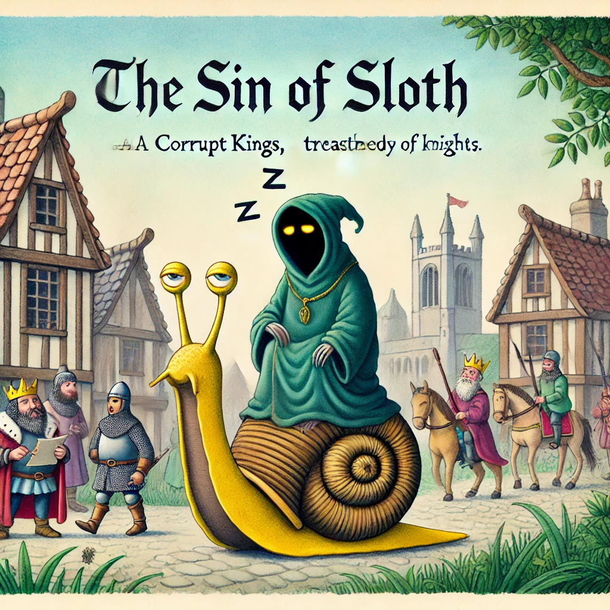
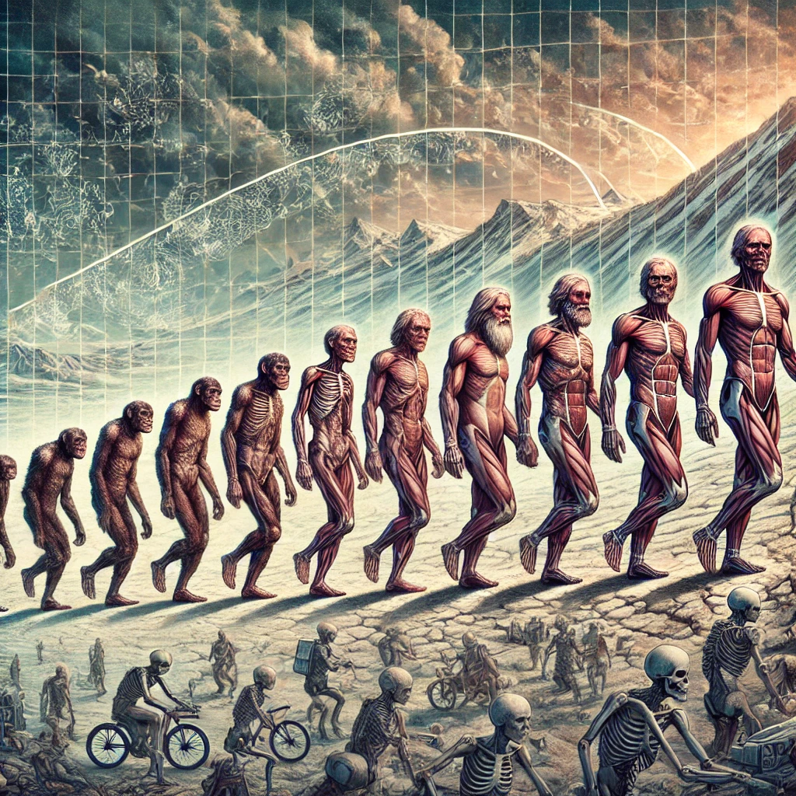

Hi, I'm Vincent Mathu, a passionate writer dedicated to crafting compelling stories and articles. I specialize in engaging content that captivates readers.
Skills:

The Sin of Sloth, a sluggish yet well-meaning entity, lazily drifts through the medieval world in search of the most evil person alive. Armed with nothing but a yawning curiosity and an ever-present desire to nap, he encounters corrupt kings, treacherous knights, and scheming merchants, each claiming to be the worst humanity has to offer. Yet, despite their misdeeds, Sloth finds them all motivated by something—greed, fear, power—none truly embodying the concept of pure evil. As his journey stretches on (far longer than intended, thanks to frequent naps), Sloth slowly realizes that true evil is not grand villainy or dramatic cruelty but often the quiet indifference to suffering. The peasants, bound by exhaustion and hopelessness, suffer more from apathy than tyranny. In a final moment of self-awareness, Sloth wonders if his own existence as the champion of inaction makes him more of a villain than any warlord or sorcerer. With a tired sigh, he resigns himself to a paradox—perhaps true evil is not an act of great malice but the refusal to act at all.

Over the span of human existence, the speed at which the human body deteriorates has shown a troubling acceleration, driven by lifestyle changes, environmental factors, and evolving medical understanding. In ancient times, life expectancy was short, but those who survived childhood often remained active well into old age. The natural wear of the body was dictated largely by physical labor, diet, and genetic resilience. However, as industrialization and modern conveniences have reduced physical strain, new ailments—such as heart disease, diabetes, and neurological disorders—have taken prominence, often leading to prolonged but more debilitating aging processes. With advancements in medicine, humans now live longer, yet their bodies often begin to decline much earlier due to sedentary habits, processed diets, and pollution. Increased exposure to artificial environments, stress, and chemical-laden food has contributed to faster cellular aging and chronic illnesses. While regenerative medicine and biotechnology hold promise for extending both lifespan and quality of life, the challenge remains: will future generations inherit stronger bodies, or will the comforts of modernity continue to accelerate physical deterioration?
Social media has evolved from a casual networking tool into a lucrative industry, allowing individuals and businesses to generate substantial income. Platforms like YouTube, TikTok, Instagram, and Twitch offer opportunities for monetization through ad revenue, sponsorships, and direct fan support. Content creators can build personal brands, attract massive audiences, and leverage engagement metrics to secure brand deals or subscription-based income. With the rise of influencer marketing, companies now prioritize social media personalities over traditional advertising, recognizing the power of digital trust and direct audience connection. However, making money through social media is not as effortless as it seems. Success requires consistency, adaptability, and an understanding of ever-changing algorithms. Many aspiring influencers struggle with burnout, content saturation, and platform policies that can limit earnings. Diversifying income streams through merchandise, crowdfunding, and exclusive content has become essential for sustainability. While social media offers financial independence to those who navigate it well, it remains a highly competitive space where only the most strategic and persistent individuals thrive.
Name: Vincent Mathu Waweru
Email: vincent.mathu7@gmail.com
Phone: +254793908533
Location: Kenya, Nakuru